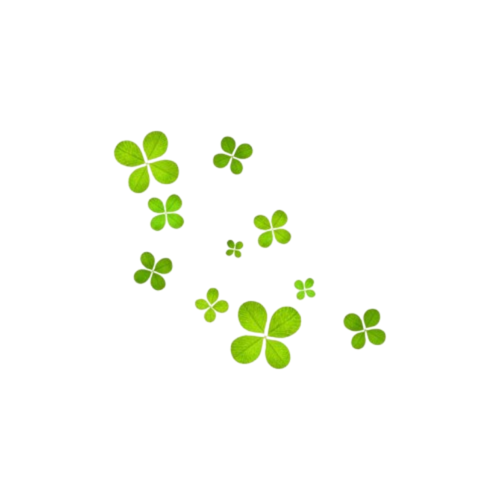
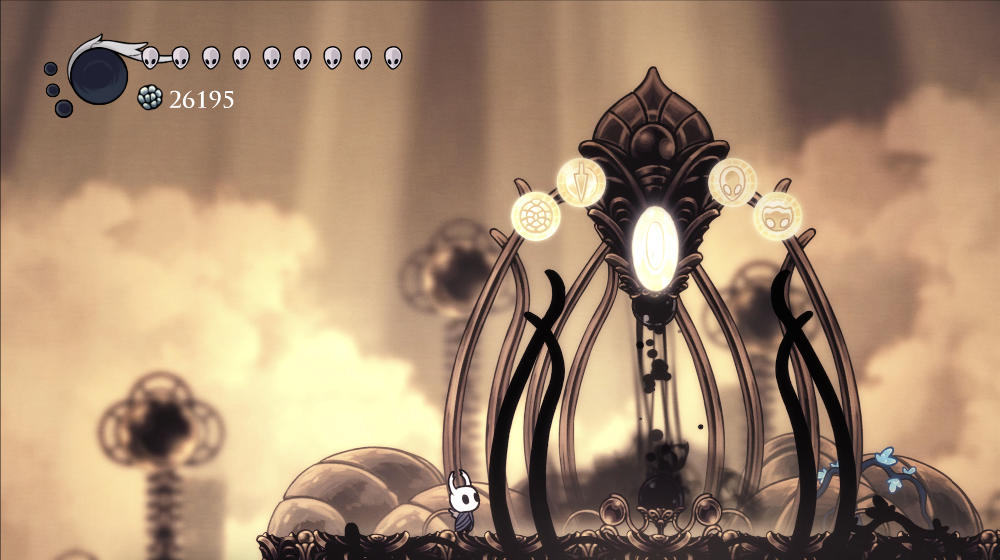
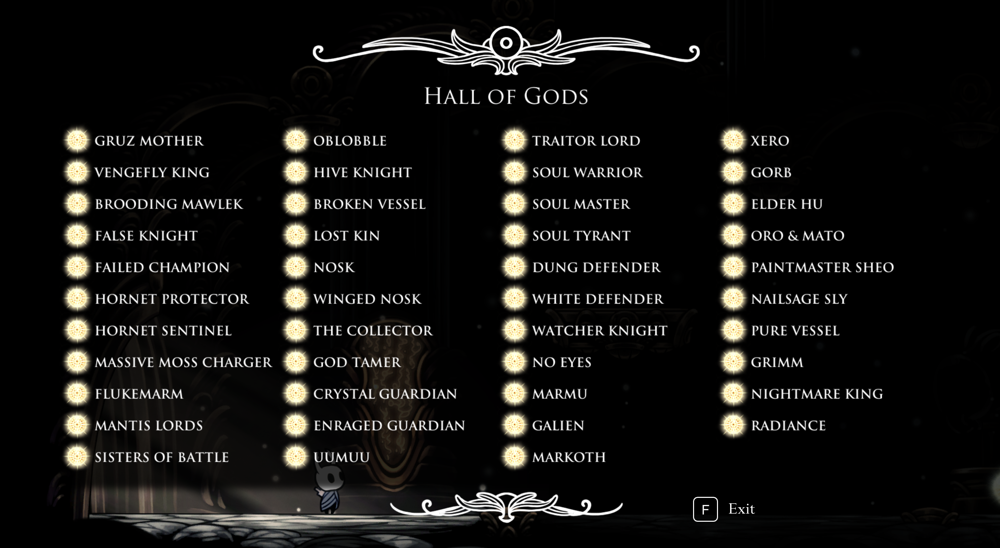
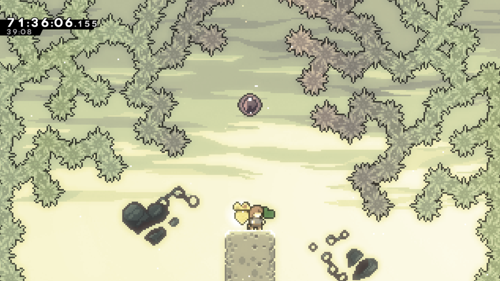

hi i like these things a lot hi
a little catalogue of things currently (and permanently) living in my brain. this isn't everything, just what i could think of off the top of my head. ask me for more, i'll happily ramble!

some clovers hi
art is a big one for me!!! mainly because it's the only thing i'm decent at. i also love writing, playing games, music, learning new things, and collecting things (mainly plushies).
drawing, painting, sculpting, 3d modeling, sewing
stories, ocs
vocaloid and jpop, mostly. but i also like ethan bortnick
some shows and stories i'm into:
"hiii hiiii :33 haaaiii"
#watdatmean
i love hello charlotte, omori, in stars and time, oneshot, illusion carnival, and shtdn. for rhythm games, you'll catch me playing beatblock, muse dash, and maimai. misc but you'll also find me on tetr.io a lot too!
other favorites include mindwave, ena: dream bbq, hollow knight (and silksong!), celeste, balatro, night in the woods, stanley parable, umamusume, sky: children of the light, bad end theater, your turn to die, and needy streamer overload. some of these i don't actively play, but i still like them! i also like a few other games but i can't really think of any more right now :3 this list will probably be updated periodically!



there's a lot more i like that didn't make the list. feel free to ask me about anything and i'll probably talk your ear off about it!